Бретонский пирог
Когда-то этот пирог, пришедший из области Бретань, был крестьянской пищей, но сейчас стал поистине одним из
символов французской кухни. Нечто среднее между пирогом, суфле, запеканкой и пудингом, он получается очень нежным,
сочным, сладким, но не приторным. Со сливочным вкусом и легкими нотками карамели.
Ингредиенты
- Свежие дрожжи: 1 ст. л. = 10 г
- Пшеничная мука хлебопекарная: 2 стакана = 260 г
- Сахар: 1 стакан = 180 г
- Сливочное масло: 160 г
- Соль: 0,5 ч. л. = 3,5 г
- Вода: 1 стакан = 200 г
- Молоко: по желанию
Приготовление
Подготовка
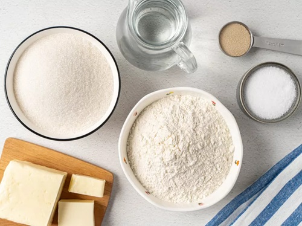
Держите масло в холодильнике, пока оно не понадобится. Просейте муку. Подготовьте блендер и форму для выпечки.
Шаг 1

Подогрейте воду, чтобы она стала чуть теплой. Разведите в ней 1 ч.л. сахара и дрожжи. Оставьте на 15 минут, чтобы дрожжи активизировались.
Шаг 2
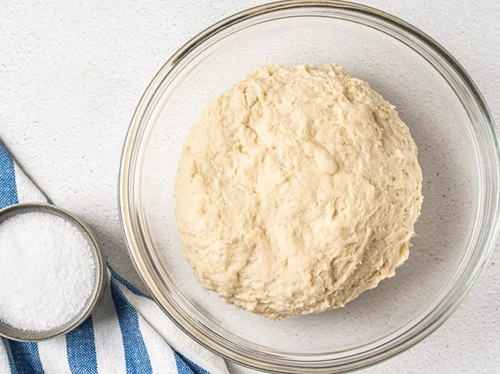
Всыпьте муку с солью в получившуюся дрожжевую опару небольшими частями. Месите тесто в течение 5 минут. Оно должно получиться эластичным и мягким, не липнущим к рукам.
Шаг 3
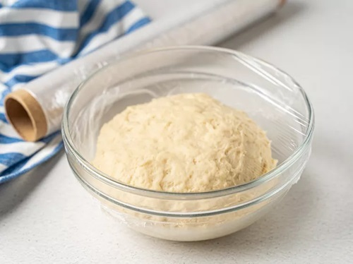
Затяните пленкой посуду с тестом и поставьте на 1 час в теплое место, чтобы оно поднялось в 2 раза. Достаточно оставить посуду в теплом помещении возле батареи. Подойдет также включенная духовка с открытой дверцей.
Шаг 4
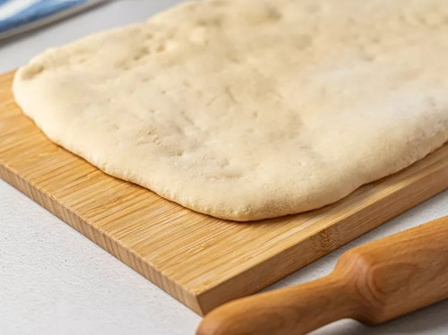
Раскатайте тесто в тонкий прямоугольный пласт размером примерно 30 ? 40 см. Короткие стороны должны располагаться по бокам.
Шаг 5
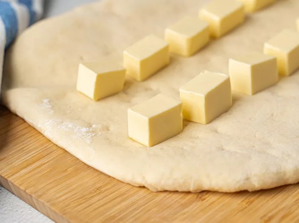
Нарежьте масло кубиками со стороной 2 ? 2 см. Оставьте 2 кубика для смазывания пирога. Остальные выложите в 2 ряда на тесто на равном расстоянии друг от друга. Полосы масла должны размещаться по центральной трети пласта.
Шаг 6
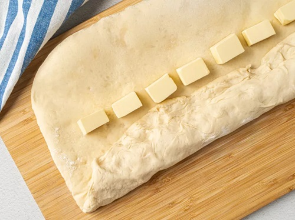
Накройте масло нижней свободной частью теста.
Шаг 7
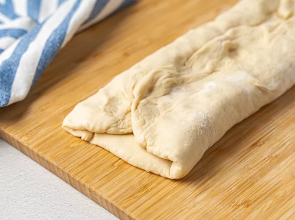
Верхнюю часть теста также заверните на заготовку поверх масла с тестом.
Шаг 8
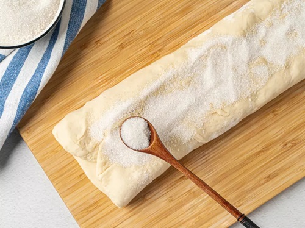
Разделите сахар на 4 части. Одной порцией посыпьте получившийся конверт.
Шаг 9
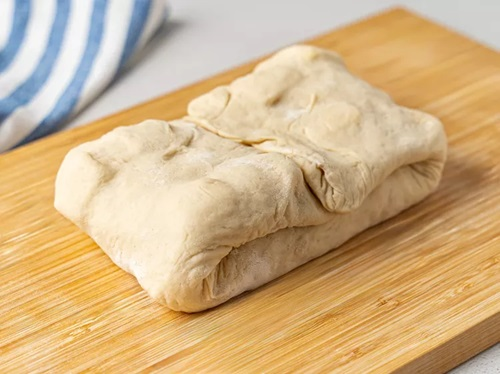
Заверните ? конверта с длинной стороны на центр. То же самое сделайте с другой свободной стороной, чтобы получился сверток. Поставьте заготовку в холодильник на 1 час.
Шаг 10
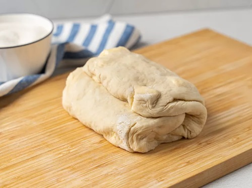
Выложите тесто на стол, посыпьте сахаром и снова сложите тесто в конверт, как в шагах 6–9. Отправьте в холодильник еще на 1 час.
Шаг 11
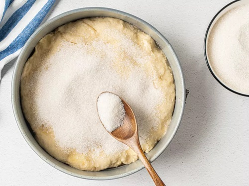
Поставьте духовку разогреваться до 200 °С. Застелите форму пергаментом. Раскатайте тесто по размеру формы и выложите в нее. Посыпьте оставшимся сахаром. Отправьте пирог в духовку на 50 минут.
Подача
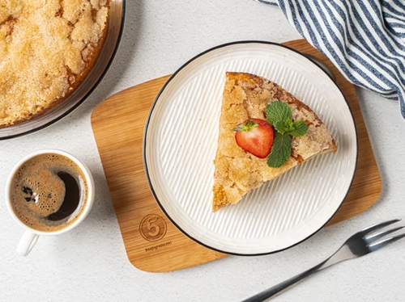
Подайте порцию бретонского пирога со стаканом молока.
|